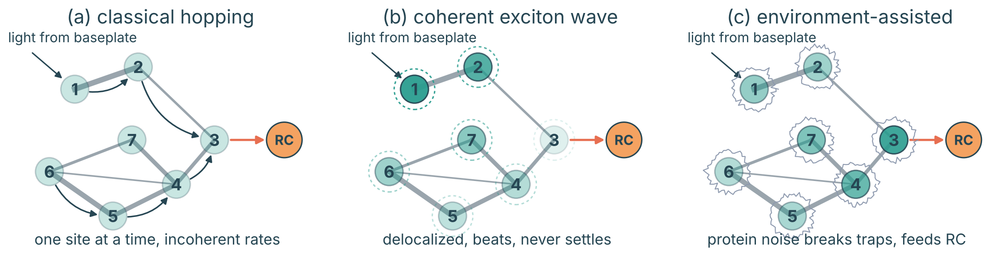

You will model how light energy moves through the Fenna–Matthews–Olson (FMO) pigment–protein complex of green sulfur bacteria, using the electronic Hamiltonian of Adolphs and Renger [1]. You will find its exciton states, simulate coherent and noisy transport to the reaction centre, and compare a quantum master equation with a classical hopping model.

Figure 1. Schematic of the seven bacteriochlorophyll (BChl) sites of one FMO monomer; line width shows coupling strength, and the layout is not the crystal geometry. Energy enters near BChl 1 and 6 from the baseplate and leaves from BChl 3 to the reaction centre (RC). (a) Classical picture: the excitation sits on one site and hops with incoherent rates. (b) Isolated quantum picture: the excitation spreads as a wave over delocalized exciton states, and site populations beat. (c) Open quantum picture: fluctuations of the protein dephase the wave. Some dephasing helps the excitation reach the trap; a lot of it freezes the excitation in place.
We encourage you to discuss the physics with classmates and to use AI tools as you work. Each student must write their own Python code and report independently. Do every quantum calculation with the open-source toolkit QuTiP 5 [6, 7], not with solvers you write yourself (see below). A wrong unit conversion or a dephasing rate off by a factor of two can still produce a plausible curve. Check your results against physical principles: the trace of the density matrix stays 1, populations stay between 0 and 1, and beat frequencies match exciton energy gaps. Be ready to explain them in your individual discussion. The tasks and submission dates are on page 2.
Use QuTiP 5.2 or later (pip install "qutip>=5.2"). Build the Hamiltonian, states and operators as Qobj, and use Qobj.eigenstates (Part 1), sesolve (Part 2), mesolve (Part 3) and HEOMSolver (Part 4). Do not write your own ODE integrators, matrix exponentials, Liouvillians or hierarchy equations. NumPy is fine for loading the file, unit conversion, the Haken–Strobl rate table, Fourier transforms and plots. QuTiP sets ħ = 1, so give H and every rate in rad fs−1 and times in fs. mesolve uses the Lindblad form on page 3, so pass the operators Lk directly as c_ops; the classical model runs through the same solver with H = 0 and c_ops √ki←j |i⟩⟨j|. For Part 4, give site j the bath BosonicBath(Q, ck_real=[2λkT], vk_real=[γc], ck_imag=[-λγc], vk_imag=[γc]) with Q = |j⟩⟨j| and kBT, λ, γc in rad fs−1. QuTiP’s DrudeLorentzBath uses the exact coefficient λγc cot(ħγc/2kBT) instead of 2λkBT, so it is not the high-temperature model.
Load the 7 × 7 site Hamiltonian and diagonalize it. Report the exciton energies and, for each eigenstate k with site amplitudes cjk, the participation number Nk = 1 / Σj |cjk|4. Which pigments carry the lowest-energy exciton? How does that relate to where the reaction centre is attached?
Solve the Schrödinger equation with no environment, starting on BChl 1 and then on BChl 6, from 0 to 1 ps. Plot the site populations. Fourier transform the population of the starting site. Which frequencies appear, and which pairs of exciton energies from Part 1 explain them? Does the excitation ever settle on BChl 3? Why or why not?
Use the Lindblad master equation on page 3, with pure dephasing at rate γ on every site, a trap that drains BChl 3 into a sink at rate κ, and a loss to the ground state at rate Γ from every site. Compute the transfer efficiency η, the final population of the sink, at γ = 0 and as γ sweeps from 0.1 to 105 cm−1 on a log scale, for both starting sites. Then build a classical rate model with Haken–Strobl hopping rates
(all quantities as angular frequencies) and the same trap and loss. Why does η drop at both very small and very large γ, and why is the drop at small γ much larger when you start on BChl 6? Choose a dephasing regime where the quantum and classical models disagree. What accounts for the difference?
Required for EE218A. Bonus for EE118. White-noise dephasing ignores temperature and the memory of the protein. Give each site its own independent harmonic bath with a Drude–Lorentz spectral density J(ω) = 2λγcω / (ω2 + γc2) and propagate the hierarchical equations of motion (HEOM) in the high-temperature approximation [3] with QuTiP’s HEOMSolver. Start on BChl 1, leave out the trap and loss, and simulate 0–1 ps at 77 K and 300 K. Increase the hierarchy depth until the populations stop changing.
How long do the population beats last at each temperature? Compare them with Part 2 and with experimental beat lifetimes [4, 5].
Hint. Compare ħγc with kBT at each temperature. Where is the high-temperature approximation safe, and what would you add where it is not? Explain any negative populations you find.
Email both submissions to the instructor and the GSI. Submit each report as a PDF of at most three pages.
Monday, November 30, before 9:30 a.m. Email your draft report with your computed figures. The draft is required for the discussion and is ungraded. Bring your laptop to class with your Python code ready to run. You will discuss your draft individually with the instructor for a few minutes. Your explanation of the method and interpretation of the results during that discussion count toward your project grade.
Wednesday, December 2, before 9:30 a.m. Email your final report as a PDF. Attach a separate ZIP containing your runnable Python code and a requirements.txt (including qutip>=5.2). In the report, explain how to install the packages and run your code on a new Hamiltonian, including how to specify the input file, the trap site and the starting site. Course staff may run your submitted code on a different light-harvesting complex and use the results in grading.
Unzip the project archive. The Hamiltonian is a comma-separated 7 × 7 array in cm−1, in the site basis (BChl 1–7 in order). Lines starting with # are comments. Off-diagonal entries are the couplings Jij; diagonal entries are the site energies εj with a common offset removed. Your code should accept any N × N file in this format.
data/ fmo_hamiltonian_cm-1.csv 7 × 7 site Hamiltonian, cm−1, offset removed
| Quantity | Value |
|---|---|
| Diagonal offset removed from the site energies | 12 210 cm−1 |
| Trap site and trapping rate, κ | BChl 3, 1 ps−1 |
| Loss rate to the ground state, Γ (every site) | 1 ns−1 |
| Pure-dephasing rate, γ (Part 3) | 0.1–105 cm−1 |
| Reorganization energy, λ (Part 4) | 35 cm−1 |
| Bath correlation time, γc−1 (Part 4) | 50 fs |
| Temperatures (Part 4) | 77 K, 300 K |
Energies and the rate γ are given in wavenumbers. Convert to angular frequency with ω = 2πcν, so 1 cm−1 corresponds to 1.884 × 10−4 rad fs−1. A beat at Δν has period 1/(cΔν); 100 cm−1 gives 333.6 fs.
For Part 3, use nine levels: sites |1⟩…|7⟩, a sink |s⟩ and a ground state |g⟩. Evolve
with dephasing operators L = √γ |j⟩⟨j|, so a site coherence ρij decays at rate γ; a trap operator √κ |s⟩⟨3|; and loss operators √Γ |g⟩⟨j|. At t = 0 the whole excitation sits on the starting site, ρ(0) = |j⟩⟨j|. Run each simulation until less than 10−3 of the population remains on the sites, and report the sink population at that time as η.